Le Concept : Héritage & Minimalisme
Situé à Bonamoussadi, dans l'ancien local d'une agence Ecobank, le SUKA Café Terrasse est une réhabilitation complète visant à transformer un espace bancaire froid en un lieu de vie chaleureux et prestigieux.
L'approche conceptuelle repose sur le "minimalisme sensoriel" marié à l'héritage culturel Bamiléké. Le point focal du projet est une canopée de bois monumentale s'élevant à plus de 4 mètres de hauteur, créant une structure arborescente qui baigne l'espace d'une atmosphère organique et protectrice.
Le défi technique : Transformer une surface de 130m² totalement cloisonnée en un espace fluide, tout en traitant des pathologies d'humidité critiques et en respectant un calendrier d'exécution ultra-serré (3 mois).
Le programme se divise en trois pôles : une terrasse extérieure majeure protégée du soleil Nord-Ouest, un bar de signature central favorisant l'interaction, et une mezzanine privative pour la gestion administrative.
Diagnostic Précis
Analyse complète des pathologies (humidité, réseaux vétustes) pour garantir la pérennité de l'ouvrage avant l'aménagement décoratif.
Structure Arborescente
Conception d'une charpente intérieure décorative en bois local, hommage aux canopées tropicales et aux structures tribales.
Optimisation des Flux
Séparation stricte entre les flux logistiques (accès arrière) et les flux clients (façade) pour une fluidité de service optimale.
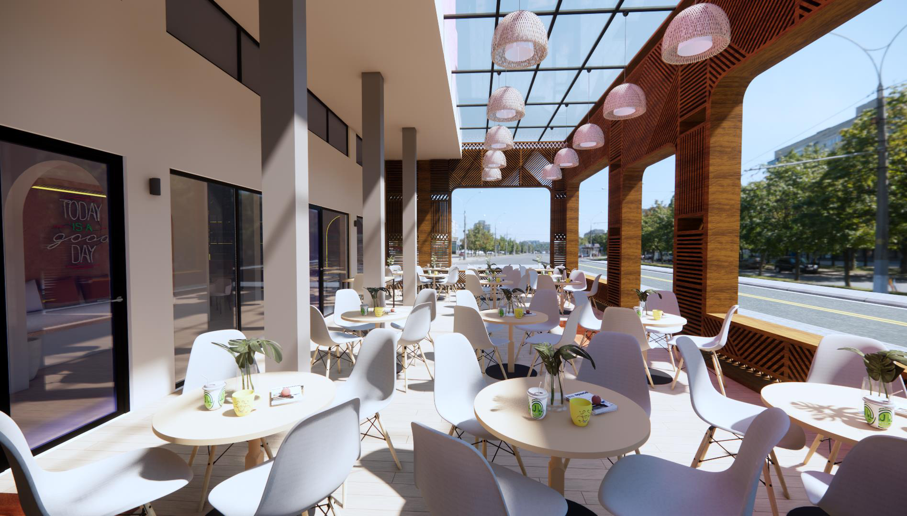
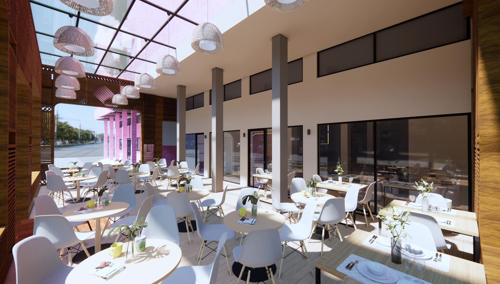
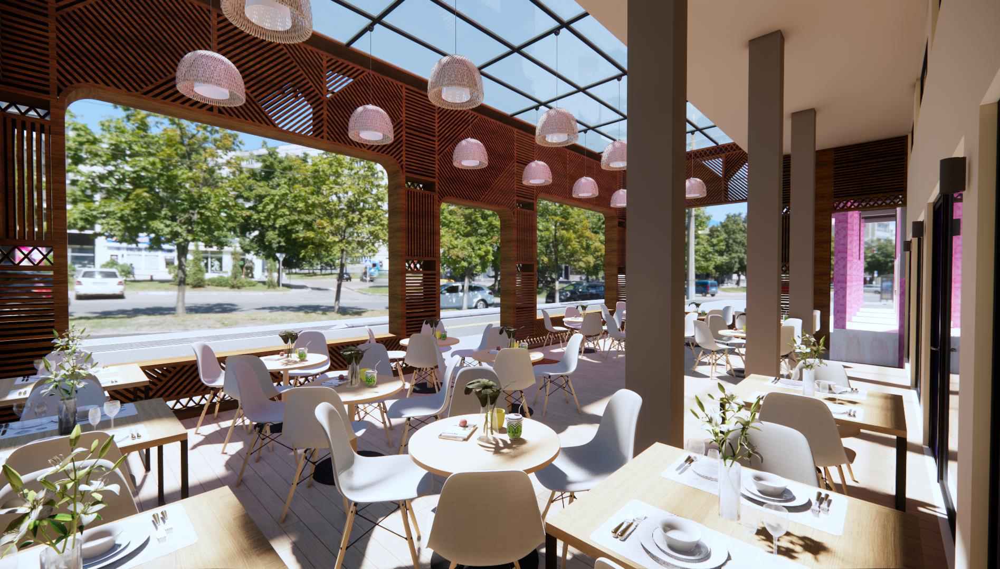
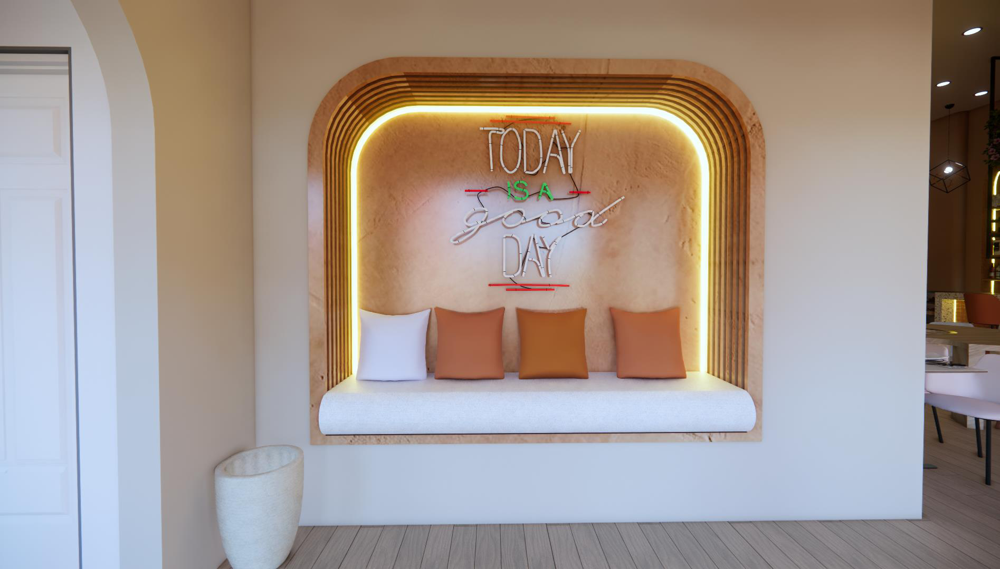
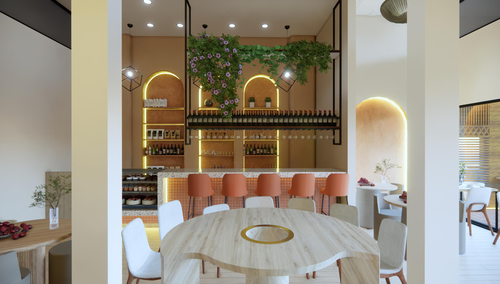
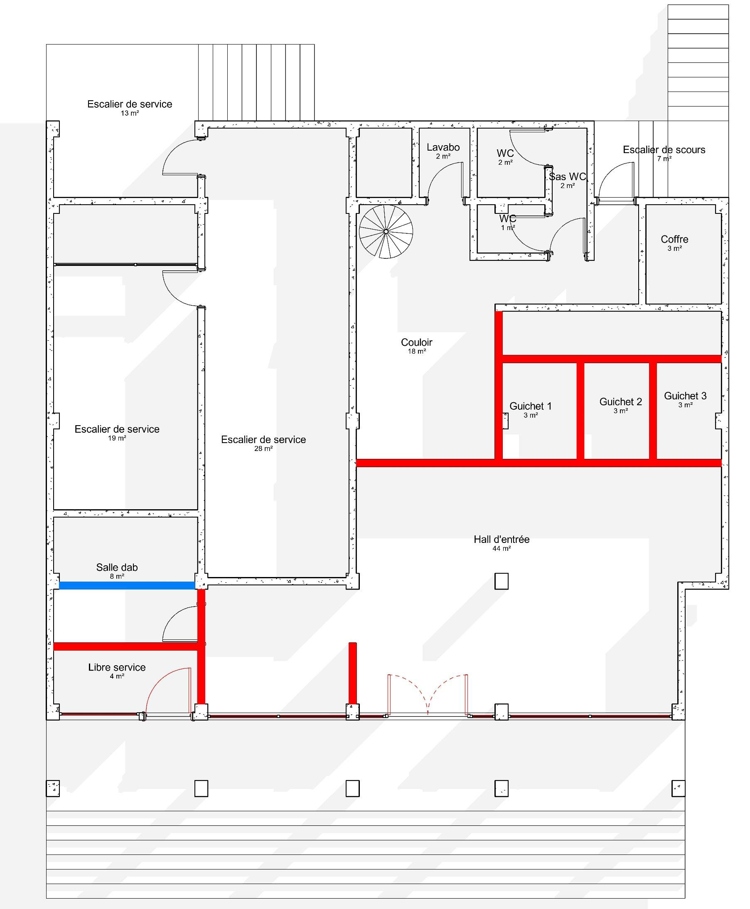
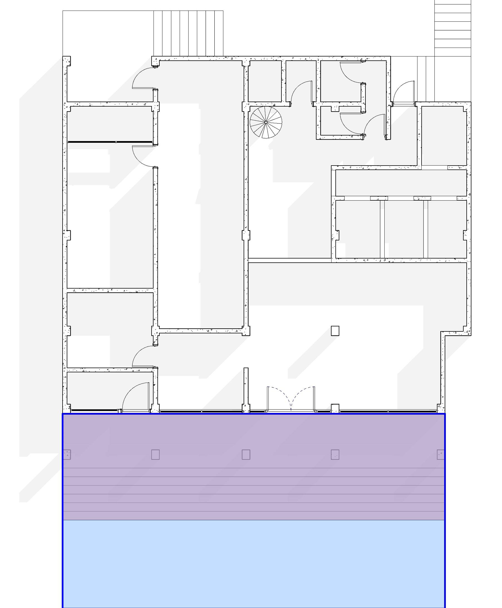
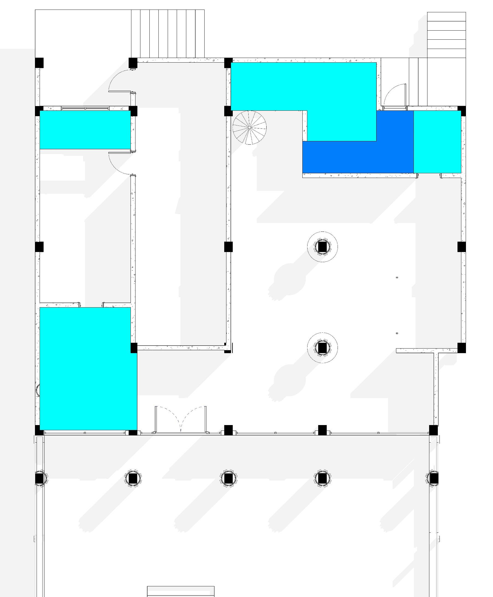
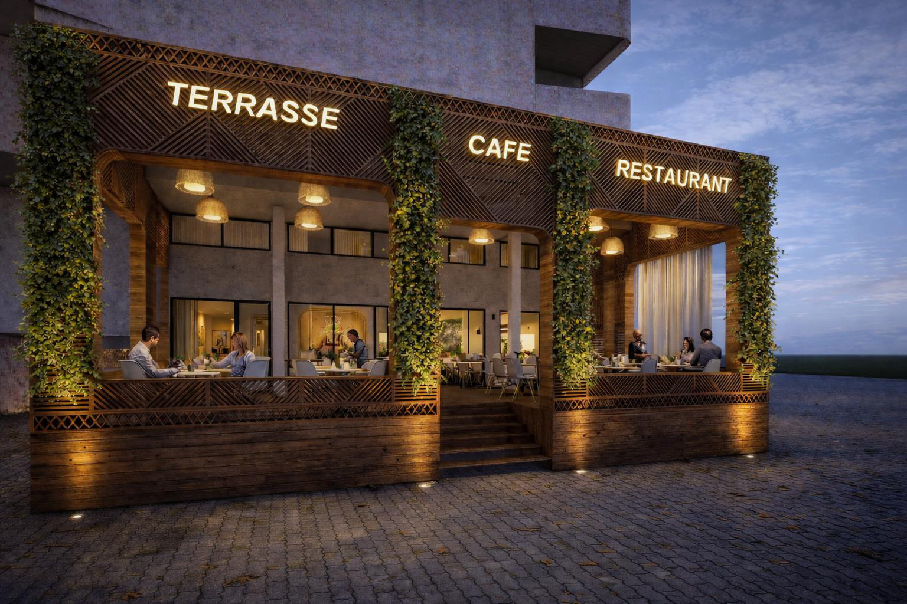
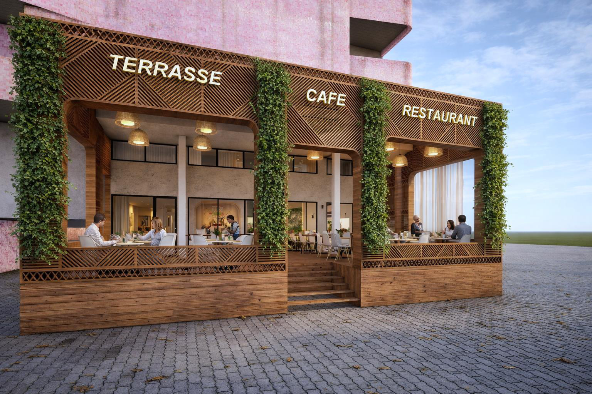
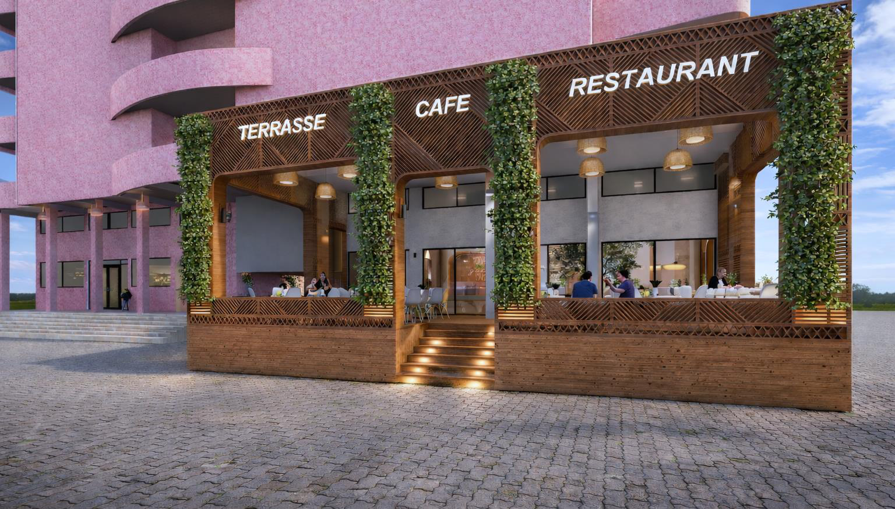
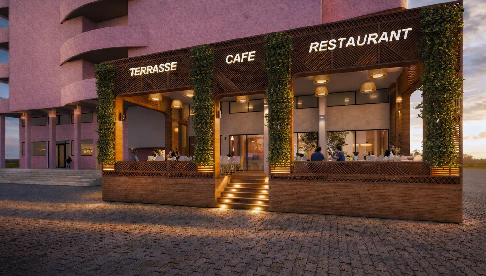